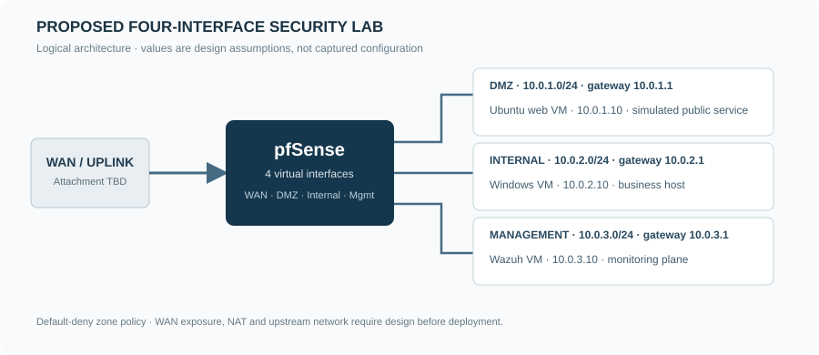
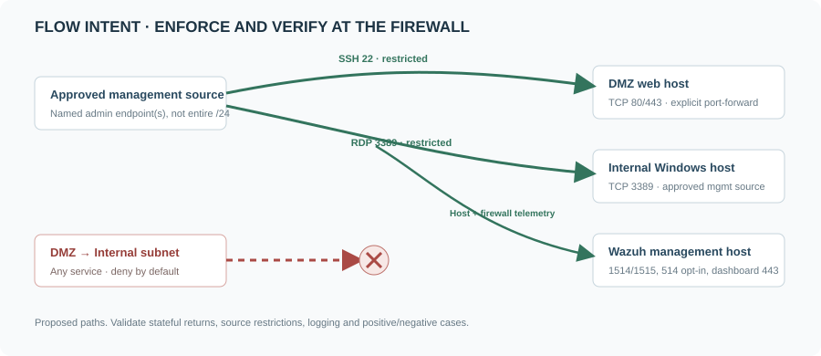
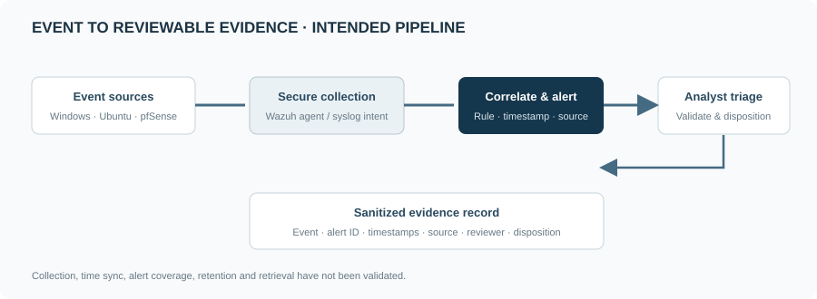
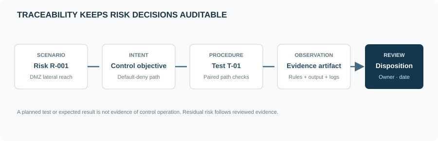
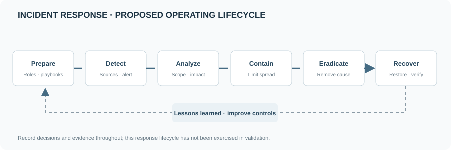
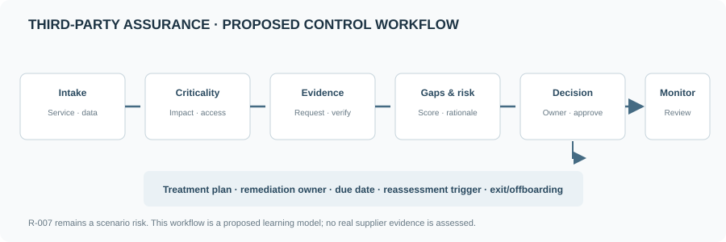

01 · PROPOSED TOPOLOGYNOT DEPLOYED

One gateway per isolated zone; WAN exposure remains unspecified until an isolated lab attachment is designed.
FICTIONAL FINANCIAL SERVICES SCENARIO · FOUR VM LAB DESIGN
A practical case study connecting business risks to network boundaries, control intent, accountable roles and reproducible test procedures.
01 / ARCHITECTURE
A proposed four-interface pfSense design separates the public service, business host and security management plane. Each connection is specified by source, destination, protocol and intent.

One gateway per isolated zone; WAN exposure remains unspecified until an isolated lab attachment is designed.

Management is source-restricted. Agent enrollment, syslog and outbound egress require explicit scope.
Separating a public-facing host from business systems narrows lateral movement paths. A dedicated management segment limits the reach of SSH, RDP and monitoring interfaces. The policy remains design intent until exported rules and paired allowed/denied tests confirm it.
Architecture, addresses & flow matrix →
Source event → collection → alert review → sanitized evidence. Delivery and detection are unverified.

Risk treatment is supportable when intent, procedure, observed result and reviewer record connect.

An evidence-minded lifecycle gives roles and records a place through response and recovery.

R-007 is a scenario risk only; no actual supplier evidence review has been performed.
02 / FULL SOURCE REPORT
The report portal organizes the project into numbered chapters. Open a chapter for its full Markdown content, source context and supporting references.
Chapter links are loaded from the publication manifest so the navigation follows the source folder mapping.
Loading chapter index…
If the chapter index cannot load, use the complete report reader or return later when the manifest is published.
03 / RISK REGISTER
Likelihood × impact creates an initial qualitative priority. These are inherent estimates; residual risk is not calculated before controls and evidence are reviewed.
Supplier weakness is explicitly tracked. The next evidence step is a fictional supplier assessment: criticality, evidence review, gaps, treatment decision, accountable approval and reassessment trigger.
Explore Vendor Assurance Desk ↗04 / CONTROL REFERENCES
Selected references help structure review. They do not establish implementation, effectiveness, certification or compliance.
GV.SCSupplier criticality, due diligence, lifecycle and monitoring · GV.SC-01/02/04/05/06/07
PR.AAIdentity, access rights and privileged access · PR.AA-05
PR.IRNetwork and infrastructure resilience · PR.IR-01
PR.PS / PR.DSSecure configuration, vulnerability management and protection of data
DE.CM / RS.MAContinuous monitoring and incident response management
RC.RPRecovery plan execution · RC.RP-01
A.5.15 / A.5.18Access control and access rights
A.5.19–A.5.21Supplier relationship security and ICT supply chain
A.5.23–A.5.26Cloud services and incident management
A.8.8 / A.8.9Technical vulnerability and configuration management
A.8.13 / A.8.15–A.8.16Information backup, logging and monitoring
A.8.20–A.8.22 / A.8.32Network security, segregation and change management
Applicability depends on organizational scope, risk decisions and an approved Statement of Applicability. The project has not assessed an operating ISMS or tested these safeguards.
05 / POLICY & TECHNICAL BASELINE
These are baseline topics to define and test in the lab. Specific configuration values should be versioned with the chosen operating systems and tools.
Default-deny inter-zone access; named source restrictions for SSH/RDP; explicit egress; logged and reviewed rule changes.
pfSense · stateful rules · NAT review · config backupLeast privilege, unique accounts, controlled administrative paths and reviewable effective access policy.
RBAC · privileged access · access review · MFA intentDocument supported versions, hardening settings, patch status and exceptions for each lab host.
Configuration baseline · vulnerability remediation · change controlIdentify security-relevant sources, timestamps, retention needs and a retrievable event-to-alert trail.
Wazuh · endpoint events · firewall syslog · time syncProtect backup access and define restore scope, integrity checks and recovery objectives before testing.
Backup isolation · restore evidence · RPO/RTO to be definedClassify criticality, assess proportionate evidence, document gaps and decisions, track treatment and reassessment.
Due diligence · evidence provenance · risk acceptance · monitoring06 / VALIDATION & READINESS
Procedures define what a controlled run should establish. No test outcome is represented as passed.
All are marked planned / not executed, with evidence expectations defined in the source validation plan.
Minimum useful test recordTest ID, timestamp and timezone, target version, exact steps, expected and observed results, sanitized artifact, reviewer and disposition.
NEXT ITERATION
Define the isolated lab attachment, provision the guests, capture the baseline and test both allowed and prohibited paths. Publish only sanitized evidence with enough context to reproduce each result.
See the evidence and implementation backlog →